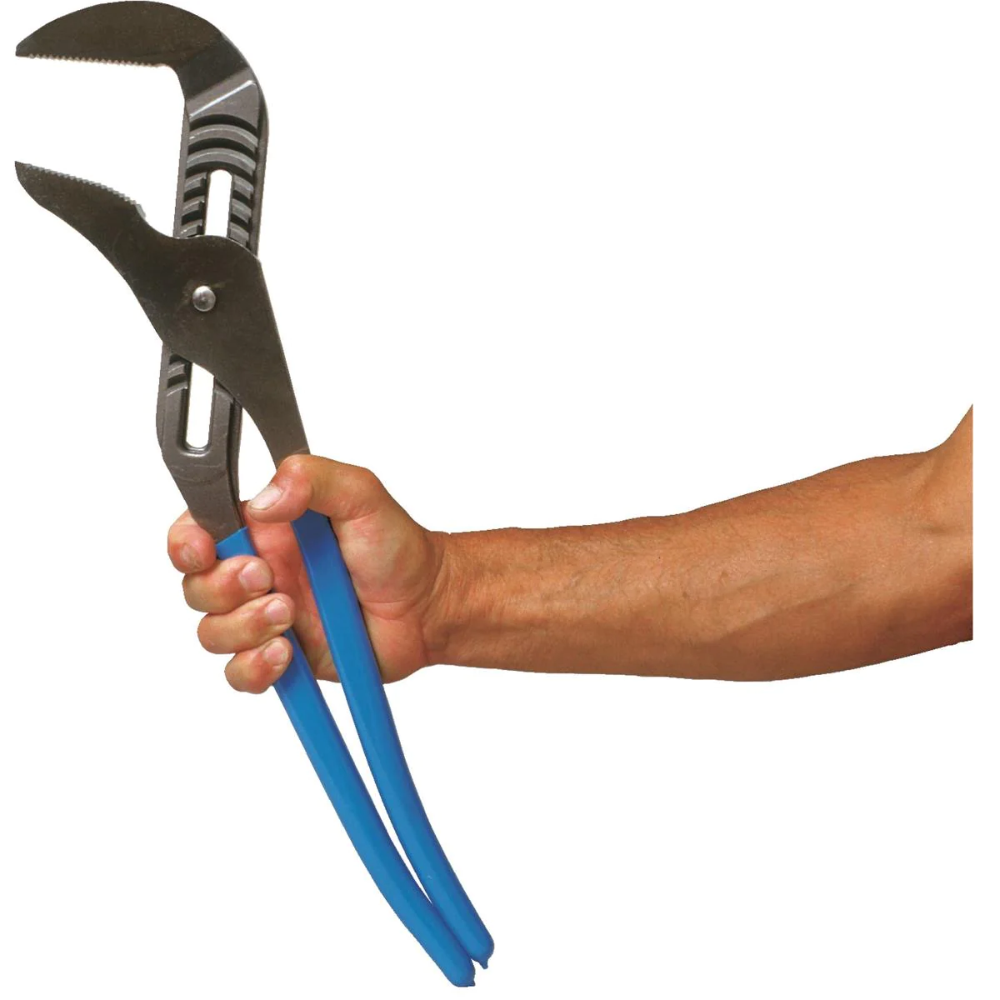

<!DOCTYPE html>
<html lang="en">
  <head>
    <meta charset="utf-8" />
    <meta name="viewport" content="width=device-width, initial-scale=1.0, maximum-scale=1.0, user-scalable=no" />

    <title></title>
    <link rel="stylesheet" href="dist/reveal.css" />
    <link rel="stylesheet" href="dist/theme/night.css" id="theme" />
    <link rel="stylesheet" href="css/vs2015.css" />
	<link rel="stylesheet" href="css/layout.css" />
	<link rel="stylesheet" href="plugin/customcontrols/style.css">

	<link rel="stylesheet" href="plugin/reveal-pointer/pointer.css" />


    <script defer src="dist/fontawesome/all.min.js"></script>

	<script type="text/javascript">
		var forgetPop = true;
		function onPopState(event) {
			if(forgetPop){
				forgetPop = false;
			} else {
				parent.postMessage(event.target.location.href, "app://obsidian.md");
			}
        }
		window.onpopstate = onPopState;
		window.onmessage = event => {
			if(event.data == "reload"){
				window.document.location.reload();
			}
			forgetPop = true;
		}

		function fitElements(){
			const itemsToFit = document.getElementsByClassName('fitText');
			for (const item in itemsToFit) {
				if (Object.hasOwnProperty.call(itemsToFit, item)) {
					var element = itemsToFit[item];
					fitElement(element,1, 1000);
					element.classList.remove('fitText');
				}
			}
		}

		function fitElement(element, start, end){

			let size = (end + start) / 2;
			element.style.fontSize = `${size}px`;

			if(Math.abs(start - end) < 1){
				while(element.scrollHeight > element.offsetHeight){
					size--;
					element.style.fontSize = `${size}px`;
				}
				return;
			}

			if(element.scrollHeight > element.offsetHeight){
				fitElement(element, start, size);
			} else {
				fitElement(element, size, end);
			}		
		}


		document.onreadystatechange = () => {
			fitElements();
			if (document.readyState === 'complete') {
				if (window.location.href.indexOf("?export") != -1){
					parent.postMessage(event.target.location.href, "app://obsidian.md");
				}
				if (window.location.href.indexOf("print-pdf") != -1){
					let stateCheck = setInterval(() => {
						clearInterval(stateCheck);
						window.print();
					}, 250);
				}
			}
	};


        </script>
  </head>
  <body>
    <div class="reveal">
      <div class="slides"><section  data-markdown><script type="text/template"><!-- .slide: class="drop" -->
<div class="" style="position: absolute; left: 0px; top: 0px; height: 700px; width: 960px; min-height: 700px; display: flex; flex-direction: column; align-items: center; justify-content: center" absolute="true">

# Progress Update
## W30
## (7/31/2023)
### John Jutoy
</div></script></section><section ><section data-markdown><script type="text/template"><!-- .slide: class="drop" -->
<div class="" style="position: absolute; left: 0px; top: 0px; height: 700px; width: 960px; min-height: 700px; display: flex; flex-direction: column; align-items: center; justify-content: center" absolute="true">

# Week 30 Plan
</div></script></section><section data-markdown><script type="text/template"><!-- .slide: class="drop" -->
<div class="" style="position: absolute; left: 0px; top: 0px; height: 700px; width: 960px; min-height: 700px; display: flex; flex-direction: column; align-items: center; justify-content: center" absolute="true">

## Week 30 Plan
- &shy;<!-- .element: class="fragment" data-fragment-index="1" -->In-person lab presentation
- &shy;<!-- .element: class="fragment" data-fragment-index="2" -->Sentinel Test
- &shy;<!-- .element: class="fragment" data-fragment-index="3" -->Rendered Figures project
- &shy;<!-- .element: class="fragment" data-fragment-index="4" -->Progress on Code
</div></script></section></section><section  data-markdown><script type="text/template"><!-- .slide: class="drop" -->
<div class="" style="position: absolute; left: 0px; top: 0px; height: 700px; width: 960px; min-height: 700px; display: flex; flex-direction: column; align-items: center; justify-content: center" absolute="true">

# Week 30 Execution
</div></script></section><section  data-markdown><script type="text/template"><!-- .slide: class="drop" -->
<div class="" style="position: absolute; left: 0px; top: 0px; height: 700px; width: 960px; min-height: 700px; display: flex; flex-direction: column; align-items: center; justify-content: center" absolute="true">

<div class="" style="padding: 60px; box-sizing: border-box; position: absolute; left: 0%; top: 0%; height: 30%; width: 100%; display: flex; flex-direction: column; align-items: center; justify-content: center" >

<div class="block">

### In-person lab presentation
</div>


</div>

<div class="stretch-column" style="padding: 0px 100px 0px; box-sizing: border-box; position: absolute; left: 0%; top: 30%; height: 70%; width: 100%; display: flex; flex-direction: column; align-items: center; justify-content: space-evenly" align="stretch">


- &shy;<!-- .element: class="fragment" data-fragment-index="1" -->Precursor to prelim
- &shy;<!-- .element: class="fragment" data-fragment-index="2" -->Plan for prelim:
	- &shy;<!-- .element: class="fragment" data-fragment-index="3" -->Context/motivation ~same
	- &shy;<!-- .element: class="fragment" data-fragment-index="4" -->Aims (new)
	- &shy;<!-- .element: class="fragment" data-fragment-index="5" -->Methodology ~same but trimmed
	- &shy;<!-- .element: class="fragment" data-fragment-index="6" -->Data Analysis (new)
	- &shy;<!-- .element: class="fragment" data-fragment-index="7" -->Future Scope (new)


</div>
</div>

<aside class="notes"><p>Although there were technical difficulties and</p>
</aside></script></section><section  data-markdown><script type="text/template"><!-- .slide: class="drop" -->
<div class="" style="position: absolute; left: 0px; top: 0px; height: 700px; width: 960px; min-height: 700px; display: flex; flex-direction: column; align-items: center; justify-content: center" absolute="true">

### Sentinel Test 
- Euthanized 6 old ABwt
- Delivered to BRL Jul 25, 2023
</div></script></section><section ><section data-markdown><script type="text/template"><!-- .slide: class="drop" -->
<div class="" style="position: absolute; left: 0px; top: 0px; height: 700px; width: 960px; min-height: 700px; display: flex; flex-direction: column; align-items: center; justify-content: center" absolute="true">

<div class="" style="padding: 60px; box-sizing: border-box; position: absolute; left: 0%; top: 0%; height: 30%; width: 100%; display: flex; flex-direction: column; align-items: center; justify-content: center" >

<div class="block">

### Rendered Figures Project
</div>


</div>

<div class="stretch-column" style="padding: 0px 100px 0px; box-sizing: border-box; position: absolute; left: 0%; top: 30%; height: 70%; width: 100%; display: flex; flex-direction: column; align-items: center; justify-content: space-evenly" align="stretch">


- &shy;<!-- .element: class="fragment" data-fragment-index="1" -->Folder containing CAD files
- &shy;<!-- .element: class="fragment" data-fragment-index="2" -->Resources (Instructions):
	- &shy;<!-- .element: class="fragment" data-fragment-index="3" -->**Finding** CAD Files
	- &shy;<!-- .element: class="fragment" data-fragment-index="4" -->**Creating** Objects in CAD
		- &shy;<!-- .element: class="fragment" data-fragment-index="5" -->Useful for Microsystems for Biomedical Applications Class
	- &shy;<!-- .element: class="fragment" data-fragment-index="6" -->**Rendering** CAD Files for figures

</div>
</div></script></section><section data-markdown><script type="text/template"><!-- .slide: class="drop" -->
<div class="" style="position: absolute; left: 0px; top: 0px; height: 700px; width: 960px; min-height: 700px; display: flex; flex-direction: column; align-items: center; justify-content: center" absolute="true">

### Sample Folder Structure
```
Biomicrosystems (Jung) Lab - CAD Files for Rendered Figures/
├── readme.md
├── instructions.md
├── CAD_Item_1/
│   ├── CAD_Item_1_metadata.md
│   └── CAD_Item_1.step
├── ▶CAD_Item_2/
└── ▶CAD_Item_N/
```
</div></script></section><section data-markdown><script type="text/template"><!-- .slide: class="drop" -->
<div class="" style="position: absolute; left: 0px; top: 0px; height: 700px; width: 960px; min-height: 700px; display: flex; flex-direction: column; align-items: center; justify-content: center" absolute="true">

### ZFMI Figure One Update


(Microscope + Ximea Camera missing)
</div></script></section><section data-markdown><script type="text/template"><!-- .slide: class="drop" -->
<div class="" style="position: absolute; left: 0px; top: 0px; height: 700px; width: 960px; min-height: 700px; display: flex; flex-direction: column; align-items: center; justify-content: center" absolute="true">

### Figure Side by Side
<split no-margin>


</split>

"Proportions off due to dimension estimation"
</div></script></section></section><section ><section data-markdown><script type="text/template"><!-- .slide: class="drop" -->
<div class="" style="position: absolute; left: 0px; top: 0px; height: 700px; width: 960px; min-height: 700px; display: flex; flex-direction: column; align-items: center; justify-content: center" absolute="true">

### Fish Room Report
Difficulty in opening dual carbon filters + Prefilters

<split even gap="2">


</split>
</div></script></section><section data-markdown><script type="text/template"><!-- .slide: class="drop" -->
<div class="" style="position: absolute; left: 0px; top: 0px; height: 700px; width: 960px; min-height: 700px; display: flex; flex-direction: column; align-items: center; justify-content: center" absolute="true">

### Aquaneering suggested:


"Large Channel Locks"
</div></script></section></section><section ><section data-markdown><script type="text/template"><!-- .slide: class="drop" -->
<div class="" style="position: absolute; left: 0px; top: 0px; height: 700px; width: 960px; min-height: 700px; display: flex; flex-direction: column; align-items: center; justify-content: center" absolute="true">

# Week 31 Plan
</div></script></section><section data-markdown><script type="text/template"><!-- .slide: class="drop" -->
<div class="" style="position: absolute; left: 0px; top: 0px; height: 700px; width: 960px; min-height: 700px; display: flex; flex-direction: column; align-items: center; justify-content: center" absolute="true">

<div class="" style="padding: 60px; box-sizing: border-box; position: absolute; left: 0%; top: 0%; height: 30%; width: 100%; display: flex; flex-direction: column; align-items: center; justify-content: center" >

<div class="block">

### Week 31 Plan
</div>


</div>

<div class="stretch-column" style="padding: 0px 100px 0px; box-sizing: border-box; position: absolute; left: 0%; top: 30%; height: 70%; width: 100%; display: flex; flex-direction: column; align-items: center; justify-content: space-evenly" align="stretch">


- &shy;<!-- .element: class="fragment" data-fragment-index="1" -->Fish Room:
	- &shy;<!-- .element: class="fragment" data-fragment-index="2" -->Euthanize old lines
	- &shy;<!-- .element: class="fragment" data-fragment-index="3" -->Fish room inventory
- &shy;<!-- .element: class="fragment" data-fragment-index="4" -->Items for purchase
- &shy;<!-- .element: class="fragment" data-fragment-index="5" -->ZFMI System Refactoring:
	- &shy;<!-- .element: class="fragment" data-fragment-index="6" -->Data Tracking
	- &shy;<!-- .element: class="fragment" data-fragment-index="7" -->Visual Stimulus
	- &shy;<!-- .element: class="fragment" data-fragment-index="8" -->Xi_Cam
- &shy;<!-- .element: class="fragment" data-fragment-index="9" -->ZFMI Figure 1

</div>
</div></script></section></section></div>
    </div>

    <script src="dist/reveal.js"></script>

    <script src="plugin/markdown/markdown.js"></script>
    <script src="plugin/highlight/highlight.js"></script>
    <script src="plugin/zoom/zoom.js"></script>
    <script src="plugin/notes/notes.js"></script>
    <script src="plugin/math/math.js"></script>
	<script src="plugin/mermaid/mermaid.js"></script>
	<script src="plugin/chart/chart.min.js"></script>
	<script src="plugin/chart/plugin.js"></script>
	<script src="plugin/customcontrols/plugin.js"></script>
	<script src="plugin/reveal-pointer/pointer.js"></script>

    <script>
      function extend() {
        var target = {};
        for (var i = 0; i < arguments.length; i++) {
          var source = arguments[i];
          for (var key in source) {
            if (source.hasOwnProperty(key)) {
              target[key] = source[key];
            }
          }
        }
        return target;
      }

	  function isLight(color) {
		let hex = color.replace('#', '');

		// convert #fff => #ffffff
		if(hex.length == 3){
			hex = `${hex[0]}${hex[0]}${hex[1]}${hex[1]}${hex[2]}${hex[2]}`;
		}

		const c_r = parseInt(hex.substr(0, 2), 16);
		const c_g = parseInt(hex.substr(2, 2), 16);
		const c_b = parseInt(hex.substr(4, 2), 16);
		const brightness = ((c_r * 299) + (c_g * 587) + (c_b * 114)) / 1000;
		return brightness > 155;
	}

	var bgColor = getComputedStyle(document.documentElement).getPropertyValue('--r-background-color').trim();
	var isLight = isLight(bgColor);

	if(isLight){
		document.body.classList.add('has-light-background');
	} else {
		document.body.classList.add('has-dark-background');
	}

      // default options to init reveal.js
      var defaultOptions = {
        controls: true,
        progress: true,
        history: true,
        center: true,
        transition: 'default', // none/fade/slide/convex/concave/zoom
        plugins: [
          RevealMarkdown,
          RevealHighlight,
          RevealZoom,
          RevealNotes,
          RevealMath.MathJax3,
		  RevealMermaid,
		  RevealChart,
		  RevealCustomControls,
	      RevealPointer,
        ],


    	allottedTime: 120 * 1000,

		mathjax3: {
			mathjax: 'plugin/math/mathjax/tex-mml-chtml.js',
		},
		markdown: {
		  gfm: true,
		  mangle: true,
		  pedantic: false,
		  smartLists: false,
		  smartypants: false,
		},

		mermaid: {
			theme: isLight ? 'default' : 'dark',
		},

		customcontrols: {
			controls: [
			]
		},
      };

      // options from URL query string
      var queryOptions = Reveal().getQueryHash() || {};

      var options = extend(defaultOptions, {"width":960,"height":700,"margin":0.04,"controls":false,"progress":false,"slideNumber":true,"transition":"slide","transitionSpeed":"slow"}, queryOptions);
    </script>

    <script>
      Reveal.initialize(options);
    </script>
  </body>

  <!-- created with Advanced Slides -->
</html>
